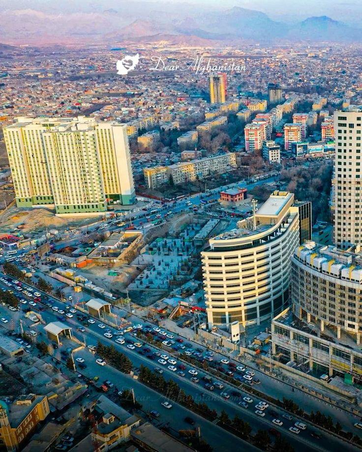
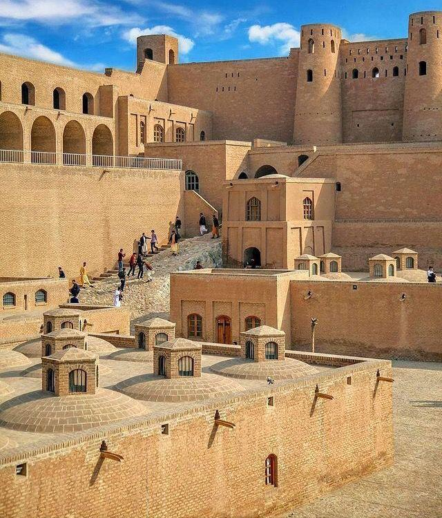
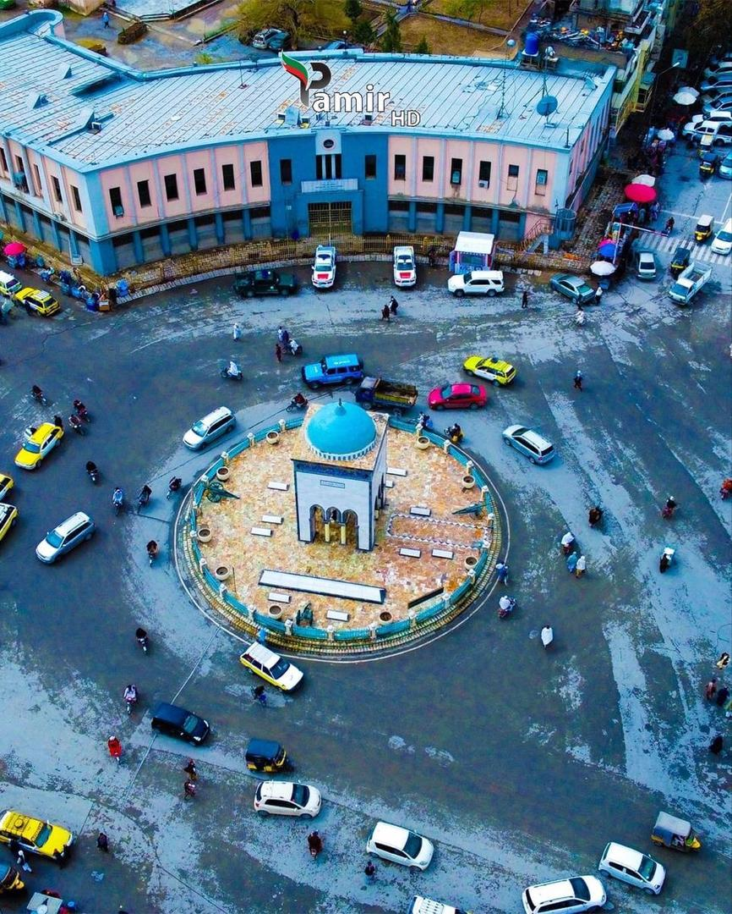
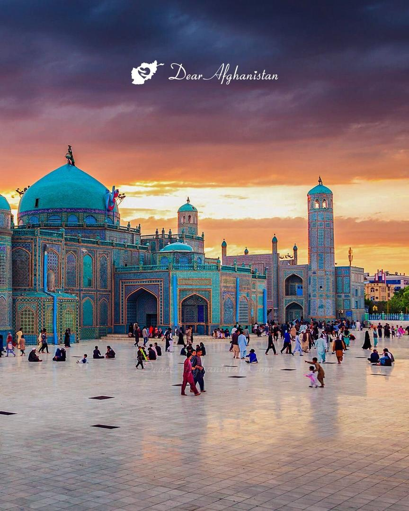
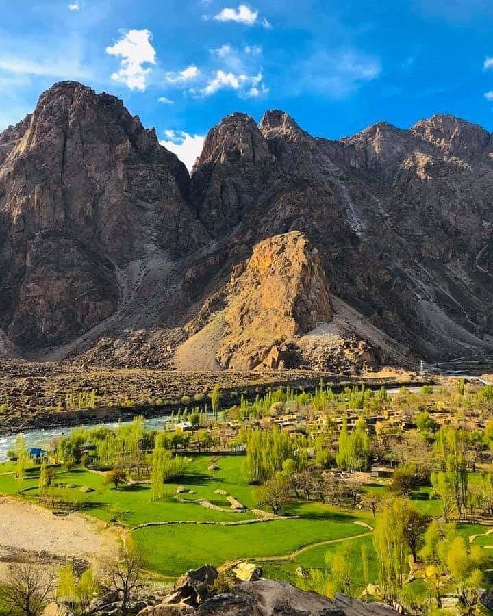

Gallery of Cities

Kabul
Known for poetry and historic bazaars.

Herat
Famous for its blue mosque and Persian art.

Bamyan
Home of ancient Buddha statues and stunning valleys.

Kandahar
Rich in tradition and pomegranate gardens.

Mazar-e Sharif
Blue Shrine and vibrant Nowruz festivals.

Badakhshan
Mountains, lapis lazuli, and unique folk music.